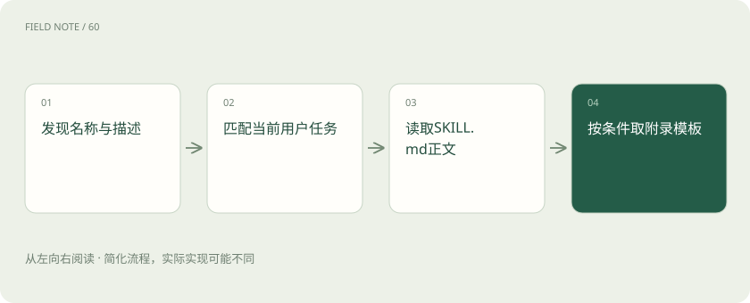
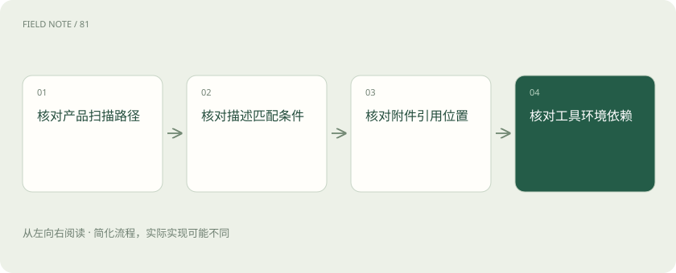

先读哪些知识
先用一个类比理解
类比只帮助建立直觉，不等同于技术的完整机制。
一图看懂
技能是文件包
Agent Skills 的核心是包含 SKILL.md 的目录。文件承载元数据与工作说明，可附脚本、参考资料及模板。加载技能主要改变当前可用上下文，不是重新训练模型参数。
因此移除技能后模型不会自动保留该公司的新流程；旧对话仍可能保留已读内容。解释效果时应追踪加载了哪些文件，而不是宣称模型永久学会了整个部门的业务。
技能目录的存在与技能进入上下文是两件事。团队共享盘里的一份手册，只有被产品发现并在适当时机读取，才会影响当前任务；文件数量无法衡量实际使用效果。
元数据承担路由职责
name 和 description 是基础字段，名称便于识别，描述帮助判断做什么以及何时使用。兼容条件可以提示环境要求，但不能替代实际检查。
“处理文档”无法区分合同审查与会议纪要。描述为“根据客户活动整理内部拜访纪要，适用于已提供客户编号和日期范围的任务”，才有机会形成清楚的触发边界。
名称不宜承担全部语义。若不同团队均有客户评审技能，应在描述中明确行业、交付类型或对象范围，以免相似名称导致选错方法，随后又难以追查原因。
渐进披露减少无关上下文
官方概念模型先暴露名称与描述，任务匹配后读取完整 SKILL.md，再按需读附件。具体产品如何发现目录、是否支持手动指定，仍须查看该产品行为。
在拥有几十种技能时，一开始塞入全部手册会占用上下文并引入不相关指令。渐进加载是信息组织方法，不保证每次都能正确匹配，也不意味着正文读入后可以忽略冲突。
渐进披露也有代价：选错索引就不会读到正确正文。优化时应先检查描述的区分度，再考虑增加正文长度，否则可能使已经选对的任务更复杂而没有改善漏选。
图解：渐进披露的读取层次

正文写可判断的步骤
正文应说明输入条件、主要流程、异常情况和交付标准。只写“认真分析，给出专业结论”无法帮助模型处理缺失客户编号、空记录或权限拒绝。
拜访纪要技能可以要求先确认时间范围，再整理活动事实，最后标记待核实事项。这些是任务操作知识；客户事实仍需从用户材料或有权访问的数据来源取得。
执行前置条件应可核验。例如要求活动记录包含时间和作者，缺失时应标记或补充；不能让执行者默默推断作者，再在输出里把推断写成来源明确的事实。
参考资料承担细节
references 可存放术语、业务规则和示例说明。把少见规则拆为独立资料，可以让常见任务避免读入全部细节，但必须提供明确的查阅路径和适用条件。
例如只有跨区域客户才需要区域归属附录，技能应告诉执行者何时读它。若关键授权规则被藏在未引用文件中，文件存在并不等于执行者已经知道或遵守。
参考文件之间应避免循环依赖和互相矛盾。用户查阅区域规则时，应能知道该规则的有效日期；没有生效时间的旧附录可能使同一任务同时采用两套客户归属口径。
脚本与资产各有角色
scripts 可承载确定性处理，assets 可保存模板等交付资源。它们是可选组成部分；没有脚本的技能依然可以提供有价值的分析步骤和版式规则。
脚本是否可以执行取决于环境与权限。模板存在也不代表输出正确填充；把客户名称填进错误列仍是失败。附件需要版本与兼容信息，不能仅凭目录名字判断用途。
资产也可能包含示例数据，需要区分占位符与真实输入。模板中的“示例客户”若进入最终报告，就是内容错误；执行者应在交付前检查残留占位文本和示例数值。
加载不是授予权限
技能声明需要访问 CRM，只表达执行条件。安装技能不会创建连接器、取得令牌或扩大员工角色。allowed-tools 字段仍属实验性，不同实现支持有别。
即使产品读取该字段，也不能把它当作统一安全边界。实际可调用能力由宿主策略、运行环境和服务端授权共同决定，技能文字无法越过这些控制。
技能要求某工具而环境没有时，应说明缺失并调整交付边界。例如只能基于用户上传记录整理纪要，就不能声称已经核对 CRM 的最新状态，更不能虚构一个成功调用。
图解：加载故障的排查路径

验证实际读到了什么
排查技能未生效时，先区分未被发现、未被选择、正文未读取和附件缺失。最后再分析模型是否正确执行步骤，避免把所有偏差都称为“技能不够强”。
同一任务在不同产品里可能经过不同加载路径。记录技能版本、选中理由、已读附件与缺失能力，可以形成可解释的诊断，而不是反复增加相同提示。
观察加载行为不必泄露完整内部资料。可记录文件标识与版本、读取阶段和失败类型，用最小证据定位问题；把全部手册复制到日志只会增加暴露面与排查噪声。
放在一起对比
| 组成部分 | 负责什么 | 边界或修正方向 |
|---|---|---|
| metadata | 提供名称与适用描述 | 不是全部执行步骤 |
| body | 提供任务方法与异常路径 | 不直接获得事实 |
| references | 按需补充领域细则 | 存在不等于已读取 |
| scripts | 提供可选确定性处理 | 存在不等于准许执行 |
放进真实场景
团队将季度纪要技能放入共享目录，但产品只扫描指定技能路径，因此新任务未发现它。修正路径后出现名称与描述，任务匹配时才读取正文；此时缺 CRM 连接仍须明确说明能力缺口。
别踩这个误区
想一想
技能已经安装，为什么任务仍可能看不出变化？
可能未被产品发现、描述未匹配、正文或附件未加载，亦可能缺少依赖能力；应沿加载阶段检查，而非直接归因于模型能力。
关联阅读
资料与边界
本文为原创知识讲解。类比和图示经过简化；示例数字不代表实测或报价。整理日期：2026-11-05。文末列出对应技术的原始资料，具体功能与版本支持请以原文为准。